조경산업기사 (2002-09-08 기출문제)
1과목: 조경계획 및 설계
1. 1943년 덴마크의 조경가 Sorensen 박사에 의해 시작된 것으로 폐품 등을 이용하여 자유롭게 탐험하며 새로운 것에 도전하게 하는 공원은?
- 유년 공원
- 특수 공원
- 탐험 공원
- 모험 공원
(정답률: 63%)

2. 도시녹지나 공원을 계획할 때 고려할 사항 중 큰 관계를 갖지 않는 것은?
- 문화재나 사적지의 분포 상황
- 녹지가 될 수 있는 자원의 부존상황(賦存狀況)
- 능률적인 녹지의 공급방법
- 도시의 공급시설 분포 상황
(정답률: 60%)
3. 조경계획에 있어 분석과정시,흔히 우리는 인간행태 분석을 하게 된다. 이때 물리적 흔적(物理的痕迹) 관찰의 특징으로서 잘못된 항목이라 볼 수 있는 것은?
- 프로젝트의 연구방향 및 성격을 용이하게 파악 할수 있다.
- 대부분의 물리적 흔적은 반복적인 관찰이 가능하다.
- 이 방법은 연구하고자 하는 인간행태(人間行態)에 영향을 미친다.
- 일반적으로 비용이 적게 들고 중요한 정보를 빨리 얻을 수 있다.
(정답률: 50%)
4. Hurlook의 어린이 놀이에 대한 일반적 특성의 설명 중 잘못된 것은?
- 놀이는 어린이 발달의 단계에 따라 달라진다.
- 놀이는 전통에 의해 영향을 받는다.
- 놀이의 활동이나 시간은 나이가 들어감에 따라 증가한다.
- 커 갈수록 특별한 놀이에 대한 활동시간이 길어진다.
(정답률: 63%)
5. 체육 공원에서 정구장의 배치는 장변(長邊)을 어떤 방향으로 해야 하는가?
- 남북
- 동서
- 동북
- 북서
(정답률: 80%)
6. 지형지물(地物)을 어느 한방향에서 수평투영한 도면은 무슨 도면인가?
- 평면도
- 단면도
- 입면도
- 투시도
(정답률: 32%)
7. 다음 중 유통계(communication系) 조경공간에 해당하는 것은 어느 것인가?
- 주택정원
- 자연공원
- 유원지
- 보행자 공간
(정답률: 48%)
8. 다음 중 어린이 공원의 표준규모는?
- 1000m2
- 1500m2
- 5,000m2
- 10000m2
(정답률: 75%)
9. 자연공원의 용도지구를 공원계획으로 결정하는데 자연보존 상태가 원시림으로 있거나 보존할 동식물 또는 천연기념물이 있거나 자연 풍경이 특히 수려하여 지정하는 지구는 어느 지구인가?
- 자연환경지구
- 자연보존지구
- 자연취락지구
- 집단시설지구
(정답률: 77%)
10. 황금 분할(golden section)에 가장 비슷한 비례는?
- 1 : 1.1
- 1 : 1.6
- 1 : 2.5
- 1 : 3.0
(정답률: 83%)
11. 다음 도면의 도시(圖示)에 해당되는 것은?
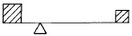
- 대칭 균형
- 비대칭 균형
- 비대칭 불균형
- 대칭 불균형
(정답률: 75%)
12. 영문 알파벳 대문자 B.S 혹은 아라비아 숫자 3, 8 등을 레터링(Lettering)할 때 가장 유의하여야 하는 눈의 착각 현상은?
- 바탕색과 글자색의 색상의 차이에 따른 착시현상
- 동일한 수직, 수평선 중에서 수직선이 길게 보이는 착시현상
- 동일한 크기의 도형을 상하로 두면 윗쪽이 아래쪽보다 크게 보이는 착시현상
- 예각은 크게, 둔각은 적게 보이는 착시현상
(정답률: 55%)
13. 자연공원을 계획하기 위하여 조사분석을 하였다. 다음 중 인문 사회환경조사 항목은?
- 식생조사
- 수문조사
- 리모트센싱에 의한 환경조사
- 토지이용조사
(정답률: 62%)
14. 영국의 정원발전에 기여한 사람들을 그들의 관계 업적과 연결시켜 놓은 것이다. 잘못된 것은?
- 렙턴 - 큐 가아든에 중국식 탑을 도입
- 브리지맨 - 하하(ha-ha)기법의 도입
- 브롬필드 - 기능주의 정원운동의 선구자
- 센스톤 - 낭만주의적 조경방식의 도입
(정답률: 64%)
15. 원야(園冶)는 누구의 저술인가?
- 이격비(李格非)
- 계성(計成)
- 문진향(文震享)
- 왕세정(王世貞)
(정답률: 70%)
16. 다음 중 창덕궁의 후원과 관련이 없는 사항은?
- 부용정
- 향원정
- 옥류천
- 취한정
(정답률: 74%)
17. 이조시대 별서정원 양식의 발생에 가장 큰 영향을 미친 것은?
- 풍수도참설
- 유교사상
- 신선사상
- 불교사상
(정답률: 73%)
18. S. Gold는 레크레이션의 접근방법을 5가지로 분류하여 그 특성을 설명했다.다음 중 해당사항이 아닌 것은?
- 자원접근방법
- 활동접근방법
- 토지이용접근방법
- 경제접근방법
(정답률: 82%)
19. 다음은 위요(enclosure)의 효과에 대한 설명이다. 어떠한 위요에 대한 설명인가?
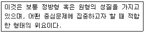
- 정적인 위요(static enclosure)
- 선적인 위요(linear enclosure)
- 개방적 위요(free enclosure)
- 위요의 볼륨
(정답률: 48%)
20. 모든 종류의 설계도, 상세도, 그리고 수량 산출서, 일위 대가표, 공사비, 시방서, 공정표 등의 서류가 작성되는 계획 설계의 단계는?
- 실시설계
- 기본계획
- 종합 및 평가
- 조사분석
(정답률: 72%)
2과목: 조경식재
21. 식재설계시의 일반적 원칙들 중 옳은 것은?
- 반복에 의해서 변화있는 경관미를 창출할 수 있다.
- 연속적인 진행 중의 갑작스런 변화는 연속감을 증대시킨다.
- 강조점이 흥미있기 위해서는 보다 강력하고 많아야 한다.
- 거친 것에서 고운 질감으로 연속되는 식재구성은 멀리 보인다.
(정답률: 69%)
22. 수목의 감각적 특성으로 볼 때 열매의 색깔이 같은 것은?
- 적색 - 주목, 산수유.
- 황색 - 쥐똥나무, 산사나무.
- 흙색 - 산딸나무, 호랑가시나무.
- 황색 - 은행, 팥배나무.
(정답률: 81%)
23. 나무 그늘에 심기 알맞는 지피 식물(地被 植物)은?
- 헤데라
- 맥문동
- 다이콘드라
- 부귀초
(정답률: 69%)
24. 삼림이나 들판의 내부보다 경계부 지역에서 식물상과 동물상이 다양하게 나타나는 현상을 일컫는 용어는?
- 서식지(habitat)
- 가장자리 효과(edge effect)
- 생물종 다양성(species diversity) 향상
- 이차천이(secondary succession)
(정답률: 61%)
25. 여러해살이 화초 중 알뿌리 화초가 아닌 것은?
- 꽃창포
- 상사화
- 꽃무릇(석산)
- 수선화
(정답률: 42%)
26. 일반적으로 거친 질감을 구성하는 것을 기술 한 것 중 옳지 않은 것은?
- 커다란 잎
- 굵고 큰 가지
- 산만하게 형성된 수관형
- 밀집된 잔가지
(정답률: 52%)
27. 개화기간이 60일 이상인 수종으로 구성되어 있는 것은?
- 개나리, 백목련
- 배롱나무, 능소화
- 철쭉, 아카시아
- 황매화, 산수유
(정답률: 66%)
28. 장엄(壯嚴)한 느낌, 정연(整然)한 느낌을 나타내게하는 식재법은?
- 자연풍경식재
- 1본식재(一本植栽)
- 균형식재(均衡植栽)
- 부등변삼각식재
(정답률: 23%)
29. 식물 군락을 성립시키는 내적(內的)요인에 해당되지 않는 것은?
- 경쟁(競爭)
- 공존(共存)
- 토착(土着)
- 기온(氣溫), 빛(光)
(정답률: 56%)
30. 조경용 수목으로서 일반적인 조건에 맞지 않는 것은?
- 이식이 쉬워야 한다.
- 교목성이라야 한다.
- 환경 적응력이 커야 한다.
- 시장성이 있어야 한다.
(정답률: 60%)
31. 야생원(wild garden)이나 록 가아든(rock garden)은 어떠한 식재수법에 속하는가?
- 사실적(寫實的)식재
- 자유(自由)식재
- 랜덤(random)식재
- 군식(群植)
(정답률: 34%)
32. 습지의 각 기능에 대한 설명으로 옳은 것은?
- 경제적 기능 : 자연교육 및 관광기능
- 수리적 기능: 홍수통제
- 생태적 기능: 농· 공용수 공급
- 기후조절 기능: 생물종 다양성의 보고
(정답률: 50%)
33. 공원에 큰 오픈 스페이스(open space)를 조성하고자 할때 적합한 식재 방법은?
- 열식하여 공간을 메운다.
- 무작위(random)식재를 한다.
- 교호식재를 한다.
- 군식을 하여 넓은 공간을 확보한다.
(정답률: 65%)
34. 우리나라에 가장 많이 분포되어 있는 잔디는?
- Zoysia japonica
- Zoysia matrella
- Zoysia tenuifolia
- Zoysia sinica
(정답률: 48%)
35. 교목,관목,지피식물,초화류 중에서 교목의 식재효과에 대한 설명과 관계가 적은 것은?
- 토양 침식 억제
- 경관의 틀 구성
- 스케일감 부여
- 시각적 초점 형성
(정답률: 78%)
36. 다음 중 배롱나무의 학명은?
- Punica granatum
- Lagerstroemia indica
- Taxus cuspidata
- Abies koreana
(정답률: 82%)
37. 잎이 나오기 이전에 개화하는 종류의 수목군은?
- 백목련, 개나리
- 자목련, 배롱나무
- 석류나무, 무궁화
- 벚나무, 모란
(정답률: 66%)
38. 난대지방에서 가로수 식재로 가장 적당한 수종으로 구성된 항목은?
- 개오동, 마가목
- 느티나무, 층층나무
- 은행나무, 회화나무
- 담팔수, 소귀나무
(정답률: 58%)
39. 방음식재(防音植裁)의 기법(技法)으로 옳지 못한 것은?
- 소음원(騷音源)에 가까이 식재할 것
- 지엽(枝葉)이 치밀하고 무성한 교목(喬木)수종을 식재할 것
- 상록수보다 낙엽수를 식재할 것
- 수림(樹林)의 폭이 넓게 식재할 것
(정답률: 45%)
40. 우리 나라와 같은 여름철에는 녹음수가 필요하다. 잎에 의한 햇빛의 차단효과는 한 장의 잎을 투과하는 햇빛량에 따라 다르다. 일반적으로 전광선량의 10~30% 정도인데 3장의 잎을 투과하는 햇빛량은 얼마로 산출되는가 (단, 한 장의 잎을 투과하는 광선량은 평균 20%로 한다.)
- 20%
- 0.8%
- 80%
- 16%
(정답률: 38%)
3과목: 조경시공
41. 밑바닥이 콘크리이트로 된 곳에 잔디를 식재하려면 표토의 최소 토심은?
- 10cm
- 30cm
- 50cm
- 90cm
(정답률: 67%)
42. 다음 기계에서 굴착, 적재, 운반, 버리기, 고르기 작업을 할 수 있는 토공기계는?
- 앵글 도우저
- 그레이더
- 드래그 라인
- 스크레이퍼
(정답률: 60%)
43. 다음 지점구조(支点構造)도해 중 구조역학상의 반력(反力)의 수가 1개인 것은 어느 것인가?
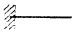
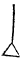
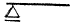
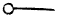
(정답률: 48%)
44. 어느 콘크리트의 28일 강도 σ 는 220 kg/cm2 이다. σ = - 210 + 215 C/W 일때, 물, 시멘트비는 얼마인가?
- 0.5%
- 2%
- 20%
- 50%
(정답률: 34%)
45. 옹벽에 작용하는 토압에 관한 설명으로 맞지 않는 것은?
- 토압은 주동, 수동 및 정지토압 등 3종이 있다.
- 주동 토압은 배토의 팽창에 의해 발생한다.
- 수동 토압은 어떤 힘이 옹벽을 배면 쪽으로 미는 경우이다.
- 옹벽의 무게에 마찰계수를 곱한 것이 토압의 합계보다 크면 활동에 대해 안전하다.
(정답률: 58%)
46. 다음 정원석 석축공에 대한 인부품을 참조하여 정원석 쌓기 10t, 놓기 20t에 대한 노임을 계산하면 얼마인가?
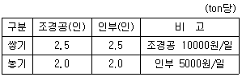
- 625,000원
- 825,000원
- 975,000원
- 1,250,000원
(정답률: 77%)
47. 공정계획의 간트 도표의 단점이 아닌 것은?
- 변화와 변경에 약하다.
- 문제점이 명확하지 않다.
- 총소요 기간의 정도를 알수 없다.
- 작업공정의 표현이 복잡하다.
(정답률: 50%)
48. 우수 유출량(Q)은
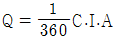
로 보통 구하게 되는데 이중 강우강도를 나타내는 I는 배수를 시켜야 하는 지역의 성격에 따라 다르게 산정해야 한다. 그러므로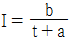
로 구하게 되는데 이중 a, b는 그 지방에 따른 상수이다. t는 무엇을 나타내는가?- 유달시간(流達時間)
- 거리(距離)
- 지면경사(地面傾斜)
- 기후특성(氣候特性)
(정답률: 72%)
49. 다음 지형도에서
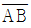
의 경사에 대한 설명 중 가장 적합한 것은?(오류 신고가 접수된 문제입니다. 반드시 정답과 해설을 확인하시기 바랍니다.)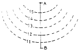
- 요사면(凹 斜面)
- 철사면(凸 斜面)
- 평사면(平斜面)
- 급경사면(急傾斜面)
(정답률: 32%)
50. 축석공사에 관한 다음 설명 중 옳지 않은 것은?
- 견치석 쌓기는 30cm × 30cm × 45cm 크기의 네모뿔형으로 다듬은 돌을 쌓는 것이다
- 호박돌 쌓기는 둥근 모양의 돌을 쌓는 것으로 가장 쉬운 공법이다
- 무너짐 쌓기는 자연의 산석을 자연스럽게 쌓는 것이다
- 평석 쌓기는 넓다랗고 평평한 돌을 쌓은 면이 수직이 되도록 쌓는 것이다
(정답률: 53%)
51. 30cm × 30cm 뗏장을 100 m2에 평떼 붙이기에서 몇 매가 필요한가?
- 900매
- 1100매
- 1500매
- 2000매
(정답률: 83%)
52. 이식계획 수립시 고려할 사항과 가장 관계가 먼 것은?
- 식재 적기의 조정
- 타 공사의 시공 일정
- 기존 식생 보호방법
- 현장 토양의 식재적합도
(정답률: 11%)
53. 수목의 규격(치수)을 정하는 여러 방법을 설명한 것 중 옳지 않은 것은?
- 흉고직경 이하에서 줄기가 여러 갈래 지는 것은 근원직경으로 한다.
- 수고나 수관폭을 잴 때 도장지는 포함하지 않는다.
- 타원형 수관은 최대층의 수관축을 중심으로한 최단과 최장의 폭을 합하여 나눈 것을 수관폭으로 한다.
- 묘목은 전체 수고로 나타낸다.
(정답률: 38%)
54. 다음은 비탈면 보호공법에 대한 설명이다. 구조물공법의 목적에 대한 것 중 적합치 않은 것은?
- 지표면의 온도변화 완화 및 동결에 대한 붕괴 억제
- 토지이용 및 효율의 증대
- 비탈면 용수의 누출방지
- 1 : 0.6 보다 급한 비탈면의 안정처리
(정답률: 18%)
55. 기성고 공정곡선 중 계획선의 상하에 허용한계선을 그어 공정을 관리할 때 이 한계선을 무엇이라 하는가?
- 바나나 곡선
- 계획 곡선
- 실적 곡선
- 누계 곡선
(정답률: 54%)
56. 콘크리트 워커빌리티(Workability)에 영향을 주는 요소가 아닌 것은?
- 콘크리트의 강도
- 골재입도와 잔골재율
- 시멘트 양
- 반죽질기 (consistency)
(정답률: 46%)
57. 벽돌 쌓기의 내용이 옳지 못한 것은?
- 벽돌에 충분한 습기가 있도록 사전에 조치한다
- 모르타르는 배합하여 1시간이내에 사용한다
- 균일한 높이로 쌓아 올라간다
- 하루의 쌓는 높이는 2.0 m까지 쌓는다
(정답률: 74%)
58. 조경 재료의 성격상 자연적 요소와 인공적 요소로 나눌수 있다. 다음 중 인공적 요소가 아닌 것은?
- 다듬은 돌
- 정원석
- 벽돌
- 철재
(정답률: 62%)
59. 미장용 마감 바르기용 모르터 1 : 3의 경우 m3 당 시멘트량은 대략 얼마 정도인가?
- 1093Kg
- 750Kg
- 510Kg
- 380Kg
(정답률: 28%)
60. 다음에 기술한 것 중 식재 공사의 특별시방서에 해당되는 것은?
- 뿌리분의 크기는 대체로 해당 수목 근원직경의 3 ∼ 5배를 기준으로 한다.
- 분의 깊이는 세근(細根)의 밀도가 현저히 감소된 부위로 한다.
- 뿌리분의 둘레는 원형으로, 측면은 수직으로, 저면(低面)은 둥글게 다듬어야 한다.
- 설계된 수목 중 소나무의 뿌리분은 감리자의 지시에 따라 뿌리분 뜨기를 한다.
(정답률: 70%)
4과목: 조경관리
61. 다음 표면 배수시설 중 미관은 아름답지만 유지관리상 원형의 유지가 비교적 어려운 측구는 어느 것인가?
- 토사측구
- 잔디측구
- 돌붙임측구
- 콘크리트측구
(정답률: 56%)
62. 토사포장면의 개량공법이 아닌 것은?
- 지반치환공법
- 노면치환공법
- 배수처리공법
- 살수처리공법
(정답률: 56%)
63. 다음은 초화류의 식재지 토양 조건에 관한 설명이다. 거리가 먼 것은?
- 견밀도가 높아야 한다.
- 배수성이 좋아야 한다.
- 보수성이 있어야 한다.
- 보비성이 있어야 한다.
(정답률: 67%)
64. 목재의 벤치나 야외탁자에서 재료의 단점이 아닌 것은?
- 파손되기 쉽다.
- 병해충의 피해를 받기 쉽다.
- 기온에 민감하다.
- 습기에 약하며 썩기 쉽다.
(정답률: 63%)
65. 이식의 목적 중 생리적 특성을 설명한 것이다. 틀리는 것은?
- 생장 억제를 위해서 한다.
- 노쇠방지를 위해서 한다.
- 개화결실 촉진을 위해서 한다.
- 가지 회복을 위해서 한다.
(정답률: 48%)
66. 아스팔트포장의 그림과 같은 부분을 패칭(patching)하려 한다. 필요한 아스팔트 량은? (단, T = 100)
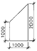
- 0.15 m3
- 0.30 m3
- 0.45 m3
- 0.60 m3
(정답률: 70%)
67. 조경물 관리 하자에 의한 사고는?
- 이용자 자신의 부주의에 의한 것
- 유아가 보호책을 넘어간 사고
- 시설물의 접속부에 손이 낀 사고
- 시설물의 노후 파손에 의한 것
(정답률: 75%)
68. 건설공사 작업에서 그 능률 및 작업의 가능성 여부에 지배적인 영향을 주는 것은 무엇인가?
- 흙의 함수비
- 식생 현황
- 수질 현황
- 공사지의 토질
(정답률: 40%)
69. 조경관리 업무의 수행에 있어서 다음 중 직영방식의 장점으로 볼 수 없는 것은?
- 관리책임이나 책임소재가 명확하다.
- 긴급한 대응이 가능하다.
- 관리실태를 정확히 파악할 수 있다.
- 규모가 큰 시설의 관리를 효율적으로 할 수 있다.
(정답률: 60%)
70. 골프장의 라프(rough)지역, 공원의 수목지역 등 150 m2 이상의 면적에 많이 사용하는 잔디깎는 기계는?
- 핸드모워(hand mower)
- 그린모워(green mower)
- 로타리 모워(rotary mower)
- 갱모워(gang mower)
(정답률: 48%)
71. 다음 중 조경관리상 목재에 대한 특징이 아닌 것은?
- 감촉이 부드러우며 가볍다.
- 재질 및 방향에 따라 강도가 달라서 파손되기 쉽다.
- 가공성이 용이하다.
- 표면처리를 다양하게 할 수 있다.
(정답률: 44%)
72. 조경 수목의 교목(喬木)류 전정에 대한 내용 중 옳지 못한 것은?
- 나무의 모양을 잡기 위한 전정은 낙엽 직후에 실시한다.
- 그 나무의 고유 수형을 충분히 고려한다.
- 작업을 수관 아래로부터 위로 올라가면서 실시한다.
- 일반적으로 오른쪽에서 왼쪽으로 돌아가면서 행한다.
(정답률: 66%)
73. 잡초 종자의 생태적 특성이 아닌 것은?
- 생명의 보존수단으로 널리 분포되어 있다.
- 휴면기작의 미발달로 잘 발아 된다.
- 휴면성이 길어서 수십년간 휴면한다.
- 휴면기작이 발달되어 방제를 어렵게 한다.
(정답률: 50%)
74. 부패된 줄기의 동공 외과수술시 순서가 가장 적당한 것은?
- 살균 및 살충제 사용 - 오염된 부분 제거 - 방수처리 - 충전재 사용
- 오염된 부분 제거 - 방수처리 - 살균 및 살충제 사용 - 충전재 사용
- 방수처리 - 살균 및 살충제 사용 - 오염된 부분 제거 - 충전재 사용
- 오염된 부분 제거 - 살균 및 살충제 사용 - 방수처리 - 충전재 사용
(정답률: 75%)
75. 잔디밭을 오래 사용하여 토양이 많이 고결(固結)되어 통기(通氣)가 매우 불량하게 되었다. 다음 중에서 통기를 목적으로 행하는 작업과 사용기계가 일치되는 항목은 어느 것인가?
- 코링(Coring) - 버티화이어(Vertifier)
- 스파이킹(Spiking) - 에리화이어(Aerifier)
- 레노베이팅(Renovating) - 레노베이터(Renovator)
- 레이킹(Raking) - 버티컷터(verticutter)
(정답률: 45%)
76. 비탈면에서 용수가 없고, 우선은 붕괴 우려가 없는 지역으로 풍화되어 낙석이 예상되는 암,식생이 부적당한 곳에 시공하는 공법은?
- 시멘트 모르타르 및 콘크리트 뿜어 붙이기공
- 콘크리트판 설치공
- 콘크리트 격자형 블록 및 심줄박기공
- 돌붙임 및 블록붙임공
(정답률: 60%)
77. 운영관리계획 중 양적인 변화로 관리계획에 필요한 것은?
- 군식지의 생태적 조건 변화에 따른 갱신
- 귀화 식물의 증대
- 야간조명으로 인한 일장효과의 증대
- 지표면의 폐쇄로 토양 조건 약화
(정답률: 55%)
78. 가로수에 유공관을 설치하여 얻고자하는 효과를 바르게 설명한 것은?
- 가로변 쓰레기와 먼지를 흘려보낸다
- 통행인으로 인한 답압을 줄인다
- 다양한 디자인으로 경관을 개선한다
- 배수 및 관수의 효율성을 높인다
(정답률: 89%)
79. 수목에 대한 전염성 병의 감염과 확산에 영향을 주는 요인이라고 볼 수 없는 것은?
- 병원체의 이상 증식
- 수목영양의 충실도
- 급격한 기상변화
- 인간의 접촉과 이용
(정답률: 58%)
80. 수간주사법에 의해서 소나무의 솔잎혹파리를 구제하고자 한다. 잘못된 것은?
- 수간에 20∼30° 정도의 하향각도로 구멍을 뚫는다.
- 흉고지름에 따라 주입 약액을 조절한다.
- 지상부에서 2 m 이상 높은 곳에서 실시한다.
- 5월 초순부터 9월말에 걸쳐 실시한다.
(정답률: 83%)